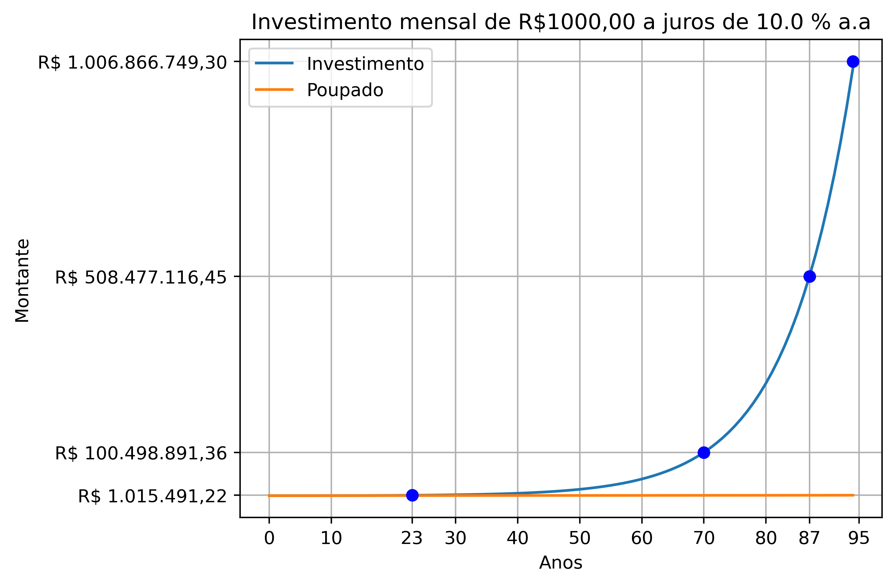

Como ser um Bilionário!
Há algum tempo o tiktok me presenteou com esse vídeo maravilhoso do perfil @eu.criativa da professora Gabriella Taranto.
Vejam o vídeo, mas para resumir, a Prof. Grabriella faz alguns cálculos para saber quanto tempo demoraria para ter o primeiro bilhão caso a pessoa decidisse investir todo o seu salário, em anos ininterruptos de trabalho, sem gastar nada, somente juntando. Ai ela usa uma regra de três simples e chega às seguintes conclusões:
Salário mensal R$ 2.500,00: 33.333 anos. (salário médio do Brasil)
Salário mensal R$ 15.000,00: 5.555 anos.
Salário R$ 75.000,00: 1.111 anos (Maior piso salarial do Brasil)
Mas vejam que ela só está considerando o valor final que foi guardado, não considera investimentos ou juros que esse dinheiro poderia render. Alguém poderia dizer:
“Ah, mas você tem que investir o dinheiro, não só guardar embaixo do colchão.”
Então decidi fazer cálculos um pouco mais “realistas”, considerando que o dinheiro fosse investido e gerasse juros, e que também não fosse reservado todo o salário.
Assim, considerei que fosse investido mensalmente R$ 1.000,00 a juros de 10.0 % a.a. Veja que para o primeiro caso que ela considerou, salário médio de R$ 2.500,00, fora da realidade de muita gente, investir R$ 1.0000,00 mensal corresponderia a 40% da renda! Além disso, um investimento de 10.0 % a.a, com baixo risco, é um excelente investimento, geralmente, a taxa de juros é menor.
Cheguei ao seguinte: Investindo-se mensalmente R$ 1.000,00 a juros de 10.0 % a.a, você levará 94 anos e 3 meses para ter um patrimônio de R$ 1.006.866.749,00 , tendo sido necessário poupar R$ 1.116.000,00. Ou seja, uma única vida não seria capaz de fazer isso, considerando-se os dados acima, que já são bem fora do padrão. Quem consegue guardar mil reais por mês, durante 94 anos, sem falhar nem uma vez!?
Não estamos considerando as perdas inflacionárias e nem os impostos. Um bilhão hoje, não terá o mesmo valor que um bilhão daqui a 94 anos.
Assim, é fácil ver que, não é somente investindo e trabalhando que uma pessoa se torna um bilionário.
Outros fatos interessante são:
Você levará 87 anos para chegar à metade do objetivo, isto é R$ 508.477.116,45.
Somente em 23 anos você alcaçaria R$ 1.015.491,22, seu prmeiro milhão!
Apenas em 70 anos você passará de 100 milhões: R$ 100.498.891,36.
E só em 87 anos você chegará a meio bilhão: R$ 508.477.116,45, metada da sua meta.
Isso ocorre, pois estamos trabalhando com juros compostos, cujo crescimento é exponencial. No gráfico abaixo, vemos que nos primeiros anos o crescimento é próximo do linear, os juros não fazem muita diferença, você está praticamente só juntando dinheiro embaixo do colchão mesmo! Só muito depois que os juros vão explodir os valores e se afastar do crescimento linear.

Outra coisa interessante que este gráfico revela é:
Quanto mais dinheiro você tem, mais fácil de aumentá-lo. Equivalentemente, quanto menos, mais difícil. Em outras palavras, o rico fica cada vez mais rico e o pobre, cada vez mais pobre.
Por fim, respondendo à pergunta do título, para alguém ser um bilionário, sem explorar ninguém e com baixos riscos, outro alguém tem que ter feito essa parte difícil de acumular bastante dinheiro. Em outras palavras, tem que ser herdeiro, sozinho não dá!
Eu fiz os cálculos e o gráfico usando python. Em um momento futuro vou acrescentar nesta postagem como os cálculo foram feitos e o script que usei.